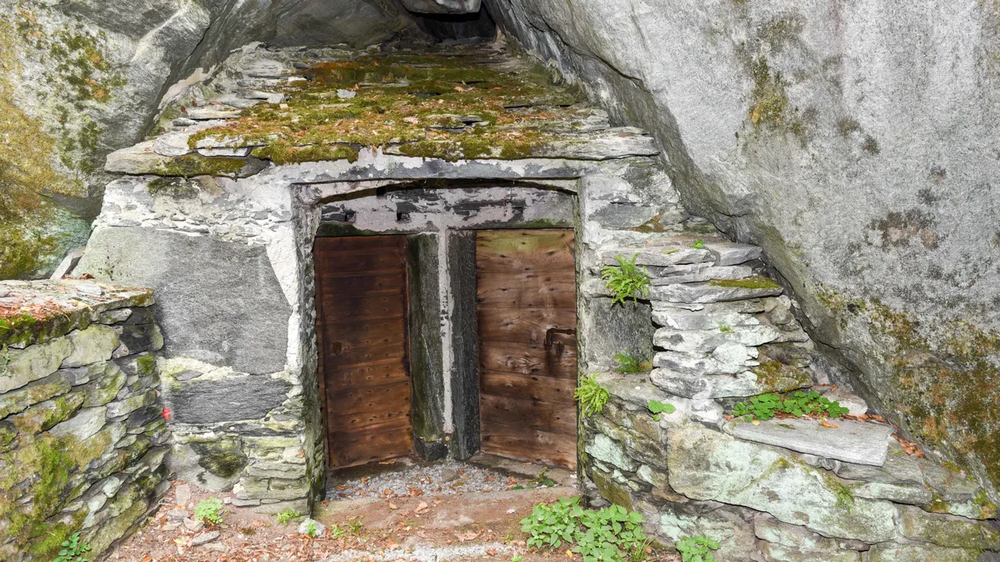
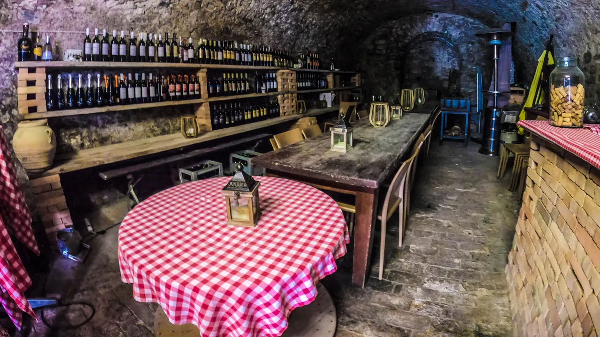

Switzerland's ingenious cooling caves
Nothing is more representative of Ticino life than its grottos, village taverns whose forerunners were natural caves used to store wine, cheese and meat.

It was a crisp, clear summers afternoon, and our boat was drifting on the sparkling blue waters of Lake Lugano in Switzerlands Italian-speaking canton of Ticino. Local fisherwoman Gabriella Monfredini Rigiani, who organises boat tours and local meal experiences in Ticino, had offered to take me around the lake and its picturesque mountain-clinging villages, many of which are only reachable by boat. As part of my half-day tour, we stopped at some grottos lining the shore of the glacial lake.
"Nothing is more typical of Ticino life than the grotti, she told me, noting that these natural caverns represent authentic Ticino and define the lifestyle of its people.
We docked at a jetty and followed an uneven path to Grotto Descanso, a village tavern housed in a simple stone building with a shaded terrace overlooking the lake. As we got closer, I could see a huge wooden door near the main entrance, below the terrace. We were greeted by the grotto's owner, who, on Rigiani's request, unlocked the door to what looked like a cave. I instantly felt a rush of cold air. Inside was a long wooden table covered with an old-fashioned chequered tablecloth and a wall-mounted wine rack loaded with bottles.
This was one of Ticino's famed grottos, traditional storehouses fashioned out of the natural landscape. Mostly dating to the 17th Century, they were originally used as family cellars, preserving wine, salami, cheese, fruit and vegetables. Similar grottos can be found throughout Ticino, and while some remain as private storehouses and others lie unused and abandoned, many, like this one, have been repurposed as cosy watering holes and village taverns.